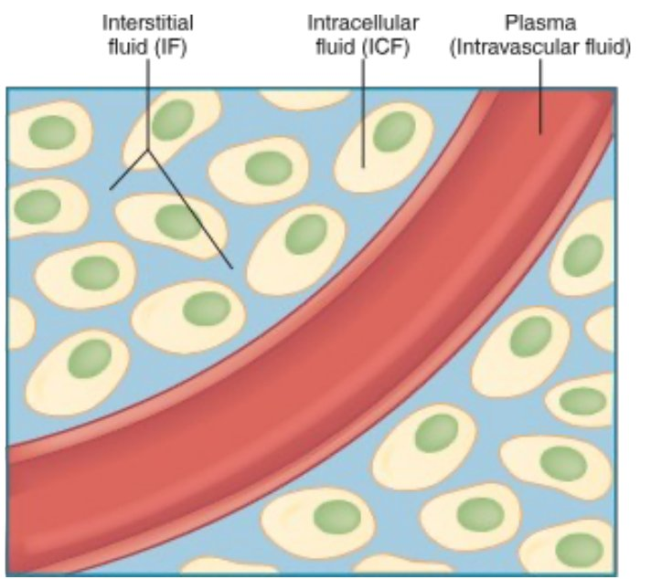
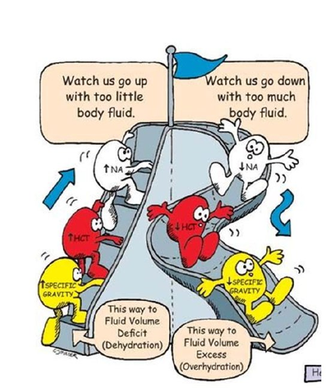
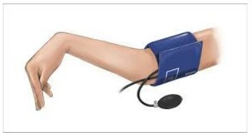
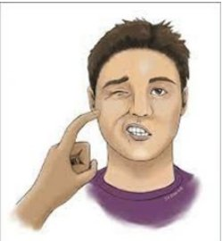
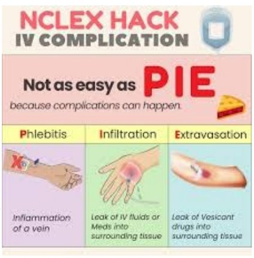
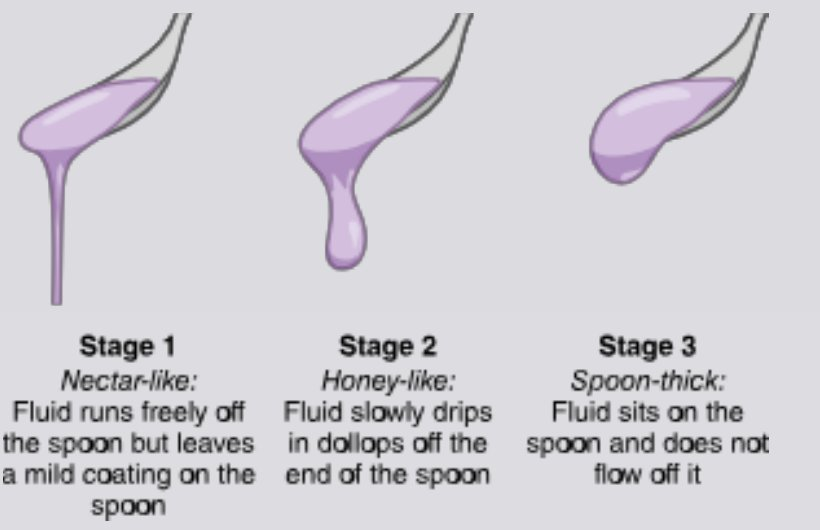
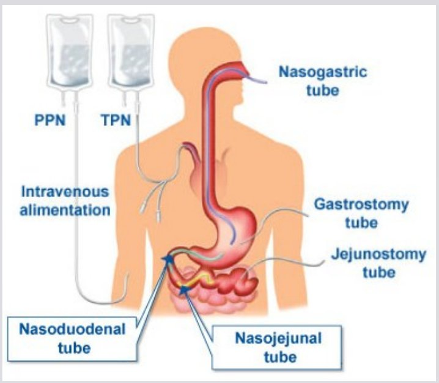

Fluid balance & imbalances
Where body water lives, how the body keeps it level, and what too little or too much looks like.
Body fluids
What body fluids do: carry nutrients to cells and waste away from them; transport hormones, enzymes, platelets, RBCs (red blood cells) and WBCs (white blood cells); help cellular metabolism and digestion; excrete waste; and act as a lubricant.
Fluids and solutes shift between compartments by osmosis, diffusion, active transport and capillary filtration, with help from organs and body systems. Acute and chronic illness, trauma, and some treatments put clients at high risk for fluid, electrolyte and acid-base imbalances, which can be life threatening.
| Compartment | What it is | Share of body water |
|---|---|---|
| ICF (intracellular fluid) | Fluid inside cells; runs cell function and metabolism | About 67% (two-thirds) |
| ECF (extracellular fluid): interstitial | Spaces between cells; includes lymph | 25% |
| ECF: intravascular | Plasma inside the blood vessels | 8% |
| ECF: transcellular | Specialized fluids: cerebrospinal, pleural, peritoneal, pericardial, synovial, digestive juices | A minor amount |

67 · 25 · 8: most water is in the cells, a quarter sits between them, and only a sliver is in the blood.
Intake, output & the kidneys
Intake
- Anything by mouth
- IV (intravenous) fluids
- Feeding tubes
Output
- Urine
- Bowel movements
- Drains
- NG (nasogastric) tube drainage
- Vomiting
- Record I&O (intake and output) per facility or unit protocol. Daily intake and output should balance.
- Fluid intake is regulated mainly by the thirst mechanism in the hypothalamus.
- The renal system (kidneys) is the main regulator of fluid volume. Water is the main solvent; solutes are electrolytes and nonelectrolytes.
| Kidney function test | Normal |
|---|---|
| BUN (blood urea nitrogen) | 10–20 mg/dL |
| Creatinine | Female 0.5–1.2 mg/dL · Male 0.6–1.3 mg/dL |
Measure all I&O in mL: 1 oz = 30 mL (an 8-oz cup is 240 mL). Intake includes foods that melt at room temperature, IV flushes and IV medications, tube feedings and irrigants. Output includes blood, emesis, diarrhea, and wound or tube drainage. Report urine output under 30 mL/hr.
Serum osmolality: how the body stays level
Serum osmolality measures the concentration of solutes to water in the blood. It's the body's gauge of fluid balance.
Normal serum osmolality: 285–295 mOsm/kg. Osmolality is just a "fancy way to look at concentration."
Blood too concentrated (osmolality ↑)
- Thirst kicks in
- ADH (antidiuretic hormone) is released, so the kidneys hold on to water and make less urine
Blood too dilute (osmolality ↓)
- Thirst shuts off
- Less ADH, so the kidneys let more water go
Fluid imbalances

Dehydration = a loss of water (or lack of water intake) without a loss of sodium. Sodium stays, so blood sodium rises (hypernatremia) and serum osmolality rises. Water moves out of the cells into the vascular space. Essentially a total loss of body water.
| Dehydration | Hypovolemia (fluid volume deficit) | Hypervolemia (fluid overload) | |
|---|---|---|---|
| What's lost or gained | Water only | Fluid and electrolytes: blood volume drops | Too much water in the body |
| Causes | Diarrhea, vomiting, diuretics | Bleeding, GI (gastrointestinal) losses (nausea, vomiting, diarrhea), heavy sweating, large burns, diuretics, low fluid intake, increased urination | Commonly kidney problems (the kidneys balance salt and fluid) |
| Key findings | Early: dry nose and mouth, poor skin turgor, less urine. Then the heart beats faster and harder and vessels in the arms and legs constrict to save blood for the heart, brain and kidneys. | Quick weight gain, ↑ BP (blood pressure), bounding pulse, pale cool skin, edema, ascites, crackles, shortness of breath, neck vein distension | |
| Treatment | IV fluids (easiest), packed cells or blood transfusion | Get rid of the extra fluid: diuretics | |
If hypovolemia or dehydration go untreated
- Oliguria (decreased urine output)
- Tachycardia and palpitations
- Tachypnea (rapid breathing)
- Low BP; weak pulse; slow capillary refill
- Change in alertness or LOC (level of consciousness)
- Flattened neck veins
- Blue lips and nail beds
Hypovolemic shock: losing more than 20% of circulating blood volume. Without treatment, poor perfusion causes multiple organ failure (lungs, kidneys, brain and heart).
Skin turgor: skin that stays tented after you pinch and release it means fluid deficit.
Neck veins tell the story: flat when the tank is low (hypovolemia), bulging when it's overfull (hypervolemia).
Hct (hematocrit) and BUN rise with fluid deficit (hemoconcentration) and fall with overload (hemodilution). Older adults are at higher risk: they have less body water and a weaker thirst sense, and skin turgor is less reliable in them. For overload: semi-Fowler's position, daily weights, fluid and sodium restriction, and monitor lung sounds and edema.
Assessing fluid and electrolyte imbalances
- I&O
- Daily weight: same time, same scale
- Regular electrolyte labs
- Urine volume and concentration: low volume + high specific gravity = fluid volume deficit
Normal urine specific gravity: 1.005–1.030. It's checked more often than serum osmolality because it's easier to get, and it's the same idea (concentration) under a different name.
- 1.030 or higher = dehydration (concentrated urine)
- 1.005 or lower = fluid overload or renal failure (dilute urine)
Quick check
Which compartment holds most of the body's water?
Intracellular fluid, about 67%.
Dehydration vs hypovolemia: what's the difference?
Dehydration loses water but not sodium, so sodium and osmolality rise. Hypovolemia loses both fluid and electrolytes, so blood volume drops.
Urine specific gravity is 1.035. What does it suggest?
Dehydration (concentrated urine; 1.030 or higher).
Bounding pulse, crackles and distended neck veins. Which imbalance, and what treatment?
Hypervolemia (fluid overload); diuretics to remove the extra fluid.
What's the normal serum osmolality?
285–295 mOsm/kg.
Electrolytes
Sodium, potassium, calcium and magnesium: normal ranges, highs and lows, and what the nurse does.
What electrolytes do
Electrolytes are minerals that conduct electricity: they make muscles contract and let nerves communicate. They're in urine, blood, tissues and other body fluids, and also in food, drinks and supplements. They're measured on the CMP (comprehensive metabolic panel).
They're responsible for: balancing body water, balancing pH (acid-base), moving waste out of cells, moving nutrients in, and letting muscles, heart, nerves and brain work.
Causes of imbalance: dehydration, overhydration, certain medications, heart, kidney or liver disorders, and the wrong IV fluids or feedings.
One slide lists magnesium as 1.3–2.1 mg/dL, but the magnesium slides and ATI use mEq/L. This guide uses mEq/L.
Sodium (Na+) 136–145 mEq/L
Supports nerve and muscle function, helps keep BP normal, and regulates fluid balance.
Hyponatremia (<136)
- Cause: loss of sodium or gain of water. Excess water is the most common cause; also vomiting, diarrhea, medications
- Nausea, confusion, lethargy, irritability
- Edema, muscle cramps, weakness
- Nursing: PO (by mouth) or IV sodium; possible fluid restriction
- Replace sodium slowly
Hypernatremia (>145)
- Cause: excess water loss or excess sodium intake. Water loss is the most common cause
- The CNS (central nervous system) is hit hardest: confusion, lethargy, agitation, irritability, hallucinations, delusions, possible seizures
- Nursing: encourage oral fluids; hypotonic IV fluids
Low sodium usually means too much water; high sodium usually means lost water. Sodium replacement has to be done slowly.
Both imbalances affect the brain because water shifts in or out of brain cells. Hyponatremia: fluid restriction for water excess; 3% saline only for severe cases. Hypernatremia: thirst, dry sticky mucous membranes, warm flushed skin; low-sodium diet.
Potassium (K+) 3.5–5 mEq/L
Helps nerve and muscle cells work, especially the muscle cells of the heart.
Hypokalemia (<3.5)
- Cause: diuretics, GI loss
- First shows in skeletal muscles: weakness, leg cramps
- Fatigue
- Dysrhythmias
- Nursing: PO or IV potassium. IV potassium is a high-alert medication
Hyperkalemia (>5)
- Cause: kidney failure is common
- Nerve conduction and muscle contraction affected
- Paresthesia (numbness, tingling), paralysis
- Life-threatening dysrhythmias or cardiac arrest
- Nursing: sodium polystyrene sulfonate, IV insulin, dialysis
IV potassium: always diluted, on a pump, 10–20 mEq per HOUR. Never give it by IV push or bolus (it can stop the heart). One ATI page says "per minute"; your instructor confirmed in class that it's per hour.
Low K = Lasix (diuretics) and losses; high K = kidneys failing. Either way, watch the heart.
Foods high in potassium: baked potatoes, bananas, oranges, spinach, avocado, cantaloupe, salmon. Salt substitutes contain potassium, so clients with hyperkalemia should avoid them. Insulin pushes potassium into the cells, so check blood glucose (risk of hypoglycemia). Hypokalemia raises the risk of digoxin toxicity. Continuous ECG (electrocardiogram) monitoring for both.
Calcium (Ca2+) 9–10.5 mg/dL
Keeps bones and teeth hard (where most of it is stored) and helps muscles move, nerves carry messages, and blood vessels move blood.
Hypocalcemia (<9)
- Cause: laxatives, lack of vitamin D, hormone changes in menopause
- Tetany!
- Numbness and tingling of fingers, mouth, feet
- Muscle cramps, seizures
- Can progress to spasm of the larynx
- Assess Trousseau's and Chvostek's signs
- Nursing: PO or IV calcium
Hypercalcemia (>10.5)
- Cause: cancers, hyperparathyroidism
- Nausea, vomiting, constipation
- Confusion, lethargy, slurred speech
- Chronic hypercalcemia → kidney stones
- Nursing: IV or PO medications


Low calcium = "twitchy." Calcium calms nerves, so without it nerves fire too easily: tingling, cramps, tetany, positive Trousseau's and Chvostek's. High calcium = "sluggish": constipation, lethargy, confusion.
Hypercalcemia: stones, bones, groans, moans (kidney stones, bone pain, abdominal groans like constipation and nausea, psychiatric moans like confusion).
Magnesium (Mg) 1.3–2.1 mEq/L
Helps regulate nerve and muscle function, BP and blood sugar, and helps make bone, protein and DNA.
Hypomagnesemia (<1.3)
- Cause: medications, decreased absorption, diarrhea
- GI: nausea, vomiting, decreased appetite
- Severely low: muscle spasticity, seizures
- Nursing: PO or IV magnesium
Hypermagnesemia (>2.1)
- Cause: kidney disease
- Dizziness, weakness, confusion
- Decreased DTRs (deep tendon reflexes)
- Nursing: IV or PO medications
Magnesium is a brake. Too much brake: everything slows (weak, dizzy, reflexes fade). Too little brake: nerves overreact (spasticity, seizures).
Low magnesium often comes with low calcium and low potassium, and can also cause positive Trousseau's and Chvostek's signs. High magnesium can slow breathing and heart rate; check reflexes and report absent ones. Calcium gluconate treats severe high magnesium (and protects the heart in high potassium).
All four at a glance
| Electrolyte | Low: main cause | Low: key sign | High: main cause | High: key sign |
|---|---|---|---|---|
| Sodium | Too much water | Confusion, nausea, edema | Water loss | CNS: agitation, hallucinations, seizures |
| Potassium | Diuretics, GI loss | Muscle weakness, leg cramps | Kidney failure | Dysrhythmias, cardiac arrest |
| Calcium | Laxatives, low vitamin D, menopause | Tetany, tingling, Trousseau's/Chvostek's | Cancers | Nausea, constipation, confusion |
| Magnesium | Meds, poor absorption, diarrhea | Nausea, vomiting; severe: spasticity, seizures | Kidney disease | ↓ deep tendon reflexes |
Quick check
A client's potassium is 6.0 mEq/L. What's the biggest danger?
Life-threatening dysrhythmias or cardiac arrest.
At what rate is IV potassium given?
10–20 mEq per hour, diluted, on a pump. Never IV push.
The BP cuff is inflated and the client's hand spasms. Which sign, and which imbalance?
Positive Trousseau's sign: hypocalcemia (latent tetany).
Most common cause of hyponatremia?
Excess water in the body.
A client with kidney disease has absent deep tendon reflexes. Which electrolyte?
Hypermagnesemia.
IV therapy & blood
IV solutions by tonicity, access devices, complications, and blood products.
IV solutions
- Colloids contain large molecules that can't pass through capillary membranes, so they stay in the vessels. Also called "plasma" or "volume" expanders.
- Crystalloids contain small particles that pass easily from the bloodstream into cells and tissues. Each is grouped by its tonicity: its ability to move water in or out of cells by osmosis.
| Tonicity | Osmolality vs blood | What happens to cells | Given for | Examples (slides) |
|---|---|---|---|---|
| Isotonic | Same | No fluid shift; no change inside cells | Increase ECF volume, maintain volume, treat hypovolemia; low blood volume from dehydration or bleeding | 0.9% normal saline, lactated Ringer's |
| Hypotonic | Lower | Water moves into cells; cells can swell | Correcting high serum electrolyte levels | 0.33% normal saline, 0.45% normal saline |
| Hypertonic | Higher | Water pulled out of cells into the vessels; cells can shrink | Low serum electrolyte levels, hypoglycemia | D5NS (dextrose 5% in normal saline), 3% and 5% sodium chloride, D10W (dextrose 10%), D5LR (dextrose 5% in lactated Ringer's) |
hypO = "Oh, cells swell" (water goes in). hypER = "cells shrivel" (water is pulled out). ISO = "I stay outside": it stays in the vessels and just adds volume.
The slides also list D5W (dextrose 5% in water) as isotonic, but your instructor said it isn't a focus for now.
Vascular access devices
- Peripheral venous catheter
- Midline catheter
- CVAD (central venous access device): PICC (peripherally inserted central catheter), central venous catheters, implanted port
Peripheral IV
- Single-lumen plastic catheter in a peripheral vein: hands, wrist, forearm, antecubital fossa
- Sizes 14 to 24 gauge: the bigger the number, the narrower the catheter
- Peripheral IV site changed every 96 hr
- IV tubing: continuous infusion every 96 hr; intermittent infusion every 24 hr
- CVAD dressings changed every 7 days; Curos caps cover ports when not in use
CVADs are indwelling devices placed in a large central vein for blood products, medications, fluids and other therapy. They're used for clients who need frequent or long-term IV therapy. Types: tunneled and nontunneled, peripherally inserted, and implanted ports.
Don't get lost in the ATI detail on CVADs: keep it simple. The vein diagram on the slides is just a visual; you don't need to memorize it.
Larger gauges (16–18) for trauma, surgery, rapid fluids and blood; 20–24 for routine or fragile veins. Start distal on the nondominant arm. Avoid veins on the side of a mastectomy, an AV (arteriovenous) fistula, or recent infiltration. Clip hair; never shave. Insert bevel up at 10–30°. Older adults or clients on anticoagulants: use a BP cuff instead of a tourniquet and a smaller catheter.
IV complications
- Phlebitis / thrombophlebitis: inflammation of the vein (can be caused by a thrombus)
- Circulatory overload
- Infiltration (leak of IV fluid) or extravasation (damaging leak of a vesicant)
- VAD (vascular access device)-related infection

PIE: Phlebitis (inflamed vein), Infiltration (leak of IV fluid or meds into tissue), Extravasation (leak of a vesicant, a drug that damages tissue).
| Complication | Looks like | Do this |
|---|---|---|
| Phlebitis | Warm, red, painful; red streak or palpable cord along the vein | Stop the infusion and remove the catheter, elevate, warm compress, restart in the other arm |
| Infiltration | Cool, pale, swollen; slowed infusion; damp dressing | Stop and remove, elevate, restart in the other arm |
| Extravasation | Same as infiltration, with a vesicant (can cause tissue death) | Stop, aspirate (don't flush), notify the provider (antidote may be needed) |
| Circulatory overload | ↑ BP, tachycardia, crackles, dyspnea, distended neck veins | Slow the IV, raise the head of the bed, notify the provider |
| Infection | Redness, swelling, pus, fever | Remove, culture the site and catheter, notify the provider |
Phlebitis is hot; infiltration is cold. Inflammation is warm and red; leaked fluid sitting in tissue is cool and pale.
Blood transfusions
Keep it simple from ATI.
| Product | What it is | Used for |
|---|---|---|
| Whole blood | WBCs, RBCs and platelets in plasma | Trauma and surgery with major blood loss |
| PRBCs (packed red blood cells) | Red cells (erythrocytes) with the plasma removed | Restore blood levels without much added volume |
| Plasma | The liquid part of blood that carries the cells | Replaces clotting factors and volume |
| Platelets | Thrombocytes: stop or prevent bleeding | Organ transplants, cancer treatment, surgery |
- Consent first; 18–20 gauge IV already in place
- Two nurses check the unit against the client at the bedside
- Only 0.9% normal saline runs with blood
- Stay with the client the first 15 minutes (most reactions happen then); vital signs before, at 15 min, and per policy
- Finish within 4 hours
- Reaction (fever, chills, back pain, hives, dyspnea, low BP): stop the transfusion, keep the vein open with normal saline through new tubing, notify the provider, send the bag back to the blood bank
Quick check
Which IV fluid makes cells swell?
Hypotonic (0.33% or 0.45% normal saline).
A client is hypovolemic from bleeding. Which type of IV solution?
Isotonic: 0.9% normal saline or lactated Ringer's.
Which catheter is larger: 18 or 22 gauge?
18 gauge. The bigger the number, the narrower the catheter.
How often is tubing changed for an intermittent infusion?
Every 24 hours (continuous: every 96 hours).
The IV site is cool, pale and swollen. What's happening?
Infiltration.
Universal donor blood type?
O negative.
Acid-base balance & ABGs (arterial blood gases)
Keep it to the basics: the normal ranges and a three-step read of an ABG.
The basics
Acid-base balance is the right balance of acidic and basic (alkaline) compounds in the blood. Normal blood pH is 7.35–7.45.
Acidosis
- pH below 7.35
- Too much acid (or too little base)
Alkalosis
- pH above 7.45
- Too much base (or too little acid)
Acidosis and alkalosis aren't diseases; they result from many disorders. Each is respiratory or metabolic depending on the cause.
Acid: carbonic acid (CO2 + water)
- Controlled by the lungs
- Measured as PaCO2 (partial pressure of carbon dioxide)
Base: bicarbonate (HCO3–)
- Controlled by the kidneys: they make bicarbonate and hold on to it, and excrete hydrogen ions (acid)
Respiratory alterations
- Hyperventilation blows off CO2 (acid) → pH rises → respiratory alkalosis. Causes: anxiety, severe stress.
- Hypoventilation holds in CO2 (acid) → pH drops → respiratory acidosis. Causes: opioid overdose, pulmonary illnesses.
CO2 is the acid you breathe out. Breathe fast, lose acid (alkalosis). Breathe slow, keep acid (acidosis).
ABG cheat sheet
Know the ABG (arterial blood gas) ranges and basic interpretation. That's all you need for now.
| ABG value | Normal | Too low | Too high |
|---|---|---|---|
| pH | 7.35–7.45 | Acidosis | Alkalosis |
| PaCO2 (acid, lungs) | 35–45 mm Hg | Toward alkalosis | Toward acidosis |
| HCO3– (base, kidneys) | 22–26 mEq/L | Toward acidosis | Toward alkalosis |
| PaO2 (partial pressure of oxygen) | 80–100 mm Hg | Oxygenation, not acid-base | |
| O2 sat (oxygen saturation) | 95–100% | ||
- Look at the pH. Below 7.35 = acidosis. Above 7.45 = alkalosis.
- Look at the PaCO2. Is it out of range in the direction that explains the pH? If PaCO2 and pH move in opposite directions, it's respiratory.
- Look at the HCO3–. If HCO3– and pH move in the same direction, it's metabolic.
| Disorder | pH | PaCO2 | HCO3– |
|---|---|---|---|
| Respiratory acidosis | ↓ | ↑ | Normal |
| Respiratory alkalosis | ↑ | ↓ | Normal |
| Metabolic acidosis | ↓ | Normal | ↓ |
| Metabolic alkalosis | ↑ | Normal | ↑ |
ROME: Respiratory Opposite (pH and PaCO2 go opposite ways), Metabolic Equal (pH and HCO3– go the same way).
Practice reads
| pH | PaCO2 | HCO3– | Answer |
|---|---|---|---|
| 7.42 | 37 | 25 | Normal |
| 7.33 | 35 | 20 | Metabolic acidosis (pH low, HCO3– low, CO2 normal) |
| 7.49 | 32 | 24 | Respiratory alkalosis (pH high, CO2 low, HCO3– normal) |
| 7.30 | 52 | 24 | Respiratory acidosis (pH low, CO2 high) |
| 7.50 | 40 | 30 | Metabolic alkalosis (pH high, HCO3– high) |
The body compensates with the other system: the lungs respond in minutes to hours, the kidneys in hours to days. Metabolic acidosis (diabetic ketoacidosis, diarrhea, kidney failure) brings deep, rapid Kussmaul breathing as the lungs blow off CO2. Metabolic alkalosis comes from prolonged vomiting, gastric suction, or too many antacids.
Nursing interventions
To prevent or correct fluid, electrolyte or acid-base imbalances: diet changes, changes to fluid intake, medications, IV therapy, blood and blood product replacement, parenteral nutrition, and client and family teaching.
Quick check
pH 7.31, PaCO2 50, HCO3– 25. Interpret.
Respiratory acidosis.
A client is having a panic attack and breathing fast. Which imbalance?
Respiratory alkalosis: hyperventilation blows off CO2.
Which organ controls bicarbonate?
The kidneys.
pH 7.32, PaCO2 40, HCO3– 18. Interpret.
Metabolic acidosis.
What does an opioid overdose do to the ABG?
Hypoventilation retains CO2: respiratory acidosis.
Nutrition
Nutrients, energy, labs, assessment, therapeutic diets, and keeping clients safe while they eat.
Principles & digestion
Nutrition is the study of food, how it affects health, and how the body turns it into energy. Adequate nutrition is essential for wellness.
6 classes of nutrients
- Supply energy: carbohydrates, proteins, lipids (fats)
- Regulate body processes: vitamins, minerals, water
Macro vs micro
- Macronutrients (protein, carbs, fat): eaten in large amounts; the building blocks of the diet; provide energy
- Micronutrients (vitamins, minerals): only small amounts needed
Digestion breaks food down into simple substances that are absorbed as nutrients or eliminated as waste.
| Organ | Job |
|---|---|
| Esophagus | Muscles push food down to the stomach |
| Stomach | Holds and digests food with acids and enzymes |
| Liver | Filters toxins; makes bile to break down carbs, proteins and fats (metabolism) |
| Gallbladder | Stores bile and releases it when needed |
| Pancreas | Makes insulin for sugar metabolism |
| Small intestine | Breaks food down and absorbs most nutrients |
| Large intestine | Removes water and electrolytes; forms feces |
| Rectum | Temporary storage for feces |
| Anus | Expels feces |
Digestive issues: stress, diet and disease can disrupt digestion, causing diarrhea, constipation, indigestion, food poisoning, flatulence and acid reflux.
Energy balance & metabolism
The average person needs about 2,000 calories a day to maintain their weight.
- Calories are the energy stored in food, used for walking, breathing and thinking
- Calories in must equal calories burned. Too few = undernourished; too many = obesity
- Basal metabolism: energy for the body's involuntary activities at rest (the body still needs calories at rest)
- Men usually have a higher BMR (basal metabolic rate) because of more muscle mass
- Increase BMR: growth, infection, fever, emotional stress, extreme temperatures, some hormones (healing increases the body's work)
- Decrease BMR: aging, prolonged fasting, too little sleep
Carbohydrates and protein give 4 kcal per gram; fat gives 9 kcal per gram.
Energy nutrients
| Nutrient | Key points |
|---|---|
| Carbohydrates | Primary fuel source (including the brain and nervous system); 45–65% of daily calories; sugars and starches; digested faster than protein or fat; converted to glucose. Complex carbs = slow, steady energy; simple carbs = quick spike |
| Proteins | "Building block of the body": growth, healing, maintenance; forms all body structures; secondary energy source (used if carbs run out). Enough protein prevents muscle breakdown, pressure injuries and muscle wasting |
| Lipids (fats) | 95% are triglycerides. Help absorb vitamins, give energy, insulation, structure and temperature control; part of every cell membrane. Most animal fats are saturated; most vegetable fats unsaturated |
"Bad" fats
- Trans and saturated
- Raise cholesterol → heart disease, stroke
"Healthy" fats
- Monounsaturated (avocado, olive oil)
- Lower cholesterol; omega-3s (fish oil) support the brain
Nutrition labs
| Lab | Normal | What it tells you |
|---|---|---|
| Total cholesterol | <200 mg/dL | High = atherosclerosis, heart disease, stroke risk |
| HDL (high-density lipoprotein) "good" | Female >55 · Male >45 mg/dL | The only one we want high |
| LDL (low-density lipoprotein) "bad" | <130 mg/dL | Keep low |
| Albumin | 3.5–5 g/dL | Nutrition status a few weeks before the draw |
| Prealbumin | 19–38 mg/dL | Short-term (current) nutrition; excellent malnutrition marker; more reliable than albumin |
HDL = Happy, keep it High. LDL = Lousy, keep it Low. Prealbumin is the present; albumin is the past few weeks.
Vitamins, minerals & water
You don't need the specifics of each vitamin, but know the types and what they do for the body. You don't need to memorize the mineral chart.
Vitamins are organic compounds needed in small amounts for metabolism of carbs, proteins and fat. Fresh foods have more than processed ones, because light, heat, air and preparation destroy vitamins.
Water-soluble: B & C
- Absorbed straight into the bloodstream
- Not stored, so a deficiency shows up sooner
- C: collagen, antioxidant, immune function, helps absorb iron
- B: energy, brain function, cell metabolism
Fat-soluble: A, D, E, K
- Absorbed with fat into the lymph; carried on proteins
- Stored in the liver and fat, so excess can cause toxicity
- A: vision, skin and mucous membranes, immunity
- D: calcium and phosphorus metabolism; calcium absorption
- E: antioxidant that protects vitamin A; fights infection
- K: blood clotting proteins (antidote for some anticoagulants)
Fat-soluble vitamins "ADEK" stick around in fat; B and C "wash out" with water.
Minerals (inorganic; usually carry a + or – charge) help hydration, metabolism, fluid regulation, nerve impulses, energy, and healthy bones, teeth and blood. Processing doesn't usually destroy them unless food is overcooked or soaked. They're mostly absorbed in the small intestine. Iron carries oxygen (hemoglobin).
Water: an essential nutrient
- 50–60% of body weight; two-thirds of it is inside cells (ICF)
- A solvent for chemical processes; helps digestion, absorption, circulation and excretion
- Regulates temperature through sweat evaporation; isn't stored
- Intake usually equals output
Average adult water intake: 2,500–3,500 mL/day.
Guidelines, labels & factors
Dietary guidelines
- Variety of nutrient-rich foods (natural sources beat supplements)
- Balanced eating pattern
- Limit saturated fat, trans fat, cholesterol, added sugar, salt, alcohol
- Healthy weight; stay active
- Drink enough water
Other terms
- Calorie density: calories per volume or weight of food
- Glycemic index: how fast a food raises blood glucose. High = rapid spike ("roller coaster"); low = slow, steady
Food labels: serving size, calories, % Daily Value, breakdown of nutrients. Reading labels lets nurses help clients choose better.
Don't assume a client can read a food label (for example, without their glasses). Ask whether they need help.
Factors that affect nutrition: physical factors, illness or trauma (healing), medications, megadoses of supplements (can affect other processes), alcohol use disorder (toxic to the GI tract; B vitamins are needed to absorb it), social determinants of health and money (food deserts), and culture, religion and traditions.
Don't assume: ask about money, food access, culture and religion.
Growth stages: adolescence, pregnancy and lactation raise needs; activity raises needs; needs level off in adulthood, and adults need fewer calories as BMR drops.
Older adults
- Slower metabolism → fewer calories
- Thirst sense fades → dehydration risk
- Need the same vitamins and minerals as younger adults; supplements may be needed
- Calcium needs rise (absorption drops) for men and women
- Need fiber and bulk for GI function
- Less absorption of vitamins and minerals; less insulin production and sensitivity
BMI & malnutrition
| BMI (body mass index) | Category |
|---|---|
| Under 18.5 | Underweight |
| 18.5–24.9 | Normal |
| 25–29.9 | Overweight |
| 30 or higher | Obese |
| Over 40 | Extreme obesity |
Know the normal BMI range. Muscle weighs more than fat, so muscular clients can have a falsely high BMI.
Two-thirds of adults are overweight or obese, which is tied to several chronic diseases. Low intake: anorexia (lack of appetite).
BMI = weight (kg) ÷ height (m)². Example: 80 kg and 1.6 m tall → 1.6 × 1.6 = 2.56 → 80 ÷ 2.56 = 31.3 (obese).
Malnutrition: impaired development or function from a long-term deficiency, excess or imbalance of nutrients. Signs: less activity, weight loss, reduced height, hair loss, swelling or a bigger abdomen. Malnourished clients heal slower and have more complications.
Hair and nails go first: the body sacrifices them when nutrients run short. No protein → low albumin → fluid leaks out of the vessels → edema.
Nutritional assessment
- 24-hour food recall
- Food frequency questionnaire
- Chewing, swallowing, condition of teeth
- Appetite, allergies, diet
- Current illness, medical and surgical history, labs
- Income and food budget
- Medical, social, economic information
- Past and current drugs; drug dependence or misuse
- Age, gender, family history, lifestyle
- Occupation, exercise, sleep
- Religious or cultural considerations
Therapeutic diets
| Diet | What it is | Notes |
|---|---|---|
| Regular | Healthy foods from all food groups | No restrictions |
| Clear liquid | See-through: water, tea, coffee, broth, carbonated drinks, popsicles, gelatin, clear fruit juices | Fluids and some electrolytes; minimal digestion; reintroduces the GI tract slowly; short-term (not true nutrition) |
| Full liquid | All clear liquids plus anything pourable at room temperature: milk, soups, pudding, yogurt, custard, plain frozen desserts, vegetable juices | The step up from clear; oral or facial surgery |
| Soft | Soft, easy to swallow and digest; no most raw fruits and vegetables, seeds, nuts, dried fruit | Trouble chewing (no teeth or dentures) or swallowing; can be long-term |
| Pureed | Soft, smooth, no chewing needed | |
| NPO (nothing by mouth) | No food or drink | May allow meds with small sips of water, unless fully NPO |
| Heart healthy | Limit sodium and unhealthy fat | |
| Renal | Limit sodium, potassium, phosphorus | |
| Consistent carbohydrate | Controls carb intake | Diabetes |
| High-fiber | Whole grains, fruits | |
| Low-residue | Easy to digest, low fiber |
Clear = can see through it. Full = can pour it. Renal = "SPP": limit Sodium, Potassium, Phosphorus.
Ways to limit sodium
- No table salt; don't salt food while cooking
- Avoid processed meats (lunch meat, hot dogs, bacon, sausage)
- Choose "no salt added" foods
- Avoid soups unless low sodium, and only one serving
- Read labels for sodium per serving
Nausea & appetite
Nausea
- Assess the cause and for dehydration
- Tissues and cool water or ice at the bedside
- Sights and smells worsen nausea: remove food that won't be eaten right away; avoid strong perfumes; fresh air
- Oral care
- Small, frequent, non-greasy meals
- Antiemetics PRN (as needed)
Stimulating appetite
- Frequent small meals; offer preferred foods
- Help with oral hygiene
- Limit liquids with meals (offer them between meals so the client eats more food)
- Clean, dry environment
- Meals with friends or family
- Comfortable position, pain controlled, no unnecessary interruptions at mealtime
Aspiration
Dysphagia (difficulty swallowing) or being unable to swallow raises aspiration risk.
Overt aspiration
- Obvious signs: coughing, wheezing, trouble breathing, congestion, gagging, throat clearing, vomiting
Silent aspiration
- No obvious signs
Preventing aspiration
- Upright, preferably in a chair, while eating
- In bed: head of bed at 90° to eat, and at least 45° for 1 hour after
- Cut food into small bites; don't rush or force feeding
- No straws
- Check the mouth for pocketed food after eating
- Watch for signs of aspiration during the meal
- Monitor LOC; avoid sedatives and hypnotics before meals
- Remind the client to tuck their chin to swallow
- Speech therapy consult for a swallow evaluation (may change the diet or add thickened liquids)

Thin liquids slip into the airway. The thicker the liquid, the slower it moves, and the more time the client has to swallow safely.
Assisting with eating
- Sit at eye level
- Appropriate drinks; cut food into small pieces
- Involve the client: preferences, order of foods, condiments
- Restroom used? Hands washed? Dentures in?
- Napkin over clothes; adaptive utensils as needed
Foods to know
Every specific food named in the slides and the ATI material, grouped by what it's high in or which diet it fits. Most of these lists come from ATI, so treat them as lighter review unless your instructor stresses them. They're handy for client-teaching questions ("Which food should the client choose?").
Electrolytes
| High in | Foods | Teach for |
|---|---|---|
| Potassium | Baked potato, prune juice, plain nonfat yogurt, white beans, sweet potato, banana, spinach, salmon, avocado, oranges, cantaloupe, dark leafy greens | Add for hypokalemia; limit for hyperkalemia and kidney disease |
| Sodium | Roasted ham, frozen shrimp, frozen pizza, canned soup, vegetable juice, cottage cheese, instant pudding, soy sauce, lunch meat, hot dogs, bacon, sausage | Limit on low-sodium and heart-healthy diets |
| Calcium | Cheese, plain nonfat yogurt, almond milk, calcium-fortified orange juice, soymilk, milk, broccoli, leafy greens, legumes, almonds | Add for hypocalcemia and bone health |
| Magnesium | Cooked spinach, pumpkin seeds, black beans, soybeans, cashews and other nuts, dark chocolate, avocado, tofu, salmon, banana | Add for hypomagnesemia |
Lower-sodium swaps: fresh shrimp instead of frozen, low-sodium vegetable juice, regular (not instant) pudding, "no salt added" canned foods. Salt substitutes usually contain potassium: avoid them with hyperkalemia or kidney disease.
Energy nutrients
Carbohydrates
- Healthy: whole-grain bread, brown rice, baked potatoes, fruits, vegetables, legumes
- Empty calories: cookies, chips, sweetened drinks, processed foods
Protein
- Complete: beef, poultry, fish, eggs, whole milk
- Other: beans, soy, nuts
Fats
- Healthy: olive oil, avocado, salmon, nuts; omega-3s in fish oil, walnuts, flaxseed
- Saturated: cheese, butter, whole milk, most animal fat
- Trans: processed foods with partially hydrogenated oils
Vitamins & minerals
| Nutrient | Foods |
|---|---|
| Vitamin C | Citrus, strawberries and berries, tomatoes, Brussels sprouts, spinach, potatoes |
| Vitamin K | Spinach, kale, parsley, liver, butter (keep intake steady on warfarin) |
| Vitamin D | Fish oil, milk, eggs, dairy, and sunlight |
| Vitamin A | Fish liver oil, beef liver, dairy, green leafy vegetables, sweet potatoes |
| Vitamin E | Almonds, wheat germ, sunflower seeds, spinach |
| Folate (B9) | Leafy greens, orange juice, eggs, beans, avocado |
| Vitamin B12 | Clams, beef, salmon, milk, yogurt |
| Iron | Organ meats, red meat, leafy greens, iron-fortified foods |
| Zinc · Iodine · Phosphorus | Zinc: meats, fish, whole grains · Iodine: seafood, iodized salt, dairy · Phosphorus: eggs, fish, poultry, milk |
Fiber & blood glucose
High fiber
- Whole grains: bran, barley, oatmeal, brown rice
- Legumes: lentils, black beans, split peas
- Raw and dried fruit: raspberries, pears and apples with skin, figs
- Broccoli, Brussels sprouts, nuts, popcorn
Low residue (low fiber)
- Dairy (custard, yogurt), eggs, ripe bananas
- Not allowed: barley, oats, lentils, black beans, raw broccoli, cabbage
Glycemic index
- High: potatoes, white bread, processed snacks
- Low: legumes, vegetables, fruits, whole grains
Foods by diet
| Diet | Foods |
|---|---|
| Clear liquid | Water, tea, coffee, broth, carbonated drinks, popsicles, gelatin, pulp-free clear juice, sports drinks (no red dye before colon procedures) |
| Full liquid | All clear liquids plus milk, strained soups, pudding, yogurt, custard, ice cream, milkshakes, vegetable juice |
| Soft | Well-cooked vegetables, low-fiber cereal, tender meat or fish, pancakes, creamy peanut butter, cooked fruit without skin or seeds |
| Pureed | Pudding, mashed potatoes, yogurt, pureed meats, broth, ice cream |
| Renal: limit potassium | Dried beans, prune juice, tomatoes and tomato sauce or juice, oranges and orange juice, spinach, collards, kale, Swiss chard. Lower-potassium: white bread, strawberries, eggs. Soak and drain potatoes before cooking |
| Renal: limit phosphorus | Dairy (about 1 cup of milk a day), dried beans, mushrooms, broccoli, Brussels sprouts, bran, granola, oatmeal, whole-grain bread; avoid beer and colas (clear sodas are OK) |
| Heart healthy | Fruits, vegetables, whole grains, lean meats, fish, skim milk, no-salt-added canned foods |
Hypoglycemia (glucose under 70 mg/dL): give 15 g of fast carbohydrate (glucose tablets or gel, 4 oz regular soda or juice, 1 tablespoon honey, or hard candy), recheck in 15 minutes, and repeat until it's at least 70. Then a meal or snack.
Quick check
Which lab best shows current (short-term) nutrition?
Prealbumin (19–38 mg/dL).
Which vitamins can build up to toxic levels?
Fat-soluble: A, D, E and K (stored in the liver and fat).
Is pudding allowed on a clear liquid diet?
No. Pudding is full liquid; clear liquids are see-through.
Which three minerals does a renal diet limit?
Sodium, potassium and phosphorus.
How long should a client at risk for aspiration stay upright after eating?
At least 1 hour, at 45° or higher.
Normal BMI range?
18.5–24.9.
Name three foods high in potassium.
Any three: baked potato, banana, spinach, salmon, avocado, oranges, prune juice, white beans, yogurt.
Enteral & parenteral nutrition
When a client can't eat enough: feeding tubes, checking placement, giving feedings, and TPN.
Enteral nutrition & tube types
Enteral nutrition puts formula directly into the GI tract through a tube. It can give total or supplemental nutrition, short or long term.
| Tube | Path | Use |
|---|---|---|
| NG (nasogastric) | Nostril → esophagus → stomach | Short-term |
| Nasoduodenal | Nostril → past the stomach → duodenum | |
| Nasojejunal | Nostril → stomach → jejunum (small intestine) | |
| G-tube (gastrostomy) / PEG (percutaneous endoscopic gastrostomy) | Through the abdominal wall directly into the stomach | Long-term; PEG is the most common placement |

The name is the route: "naso-" starts in the nose, "-gastric" ends in the stomach, "-jejunal" ends in the jejunum. Anything with "-ostomy" goes through the skin and is long-term.
Nasal tubes are for under about 4 weeks. Small-bore feeding tubes are 8–12 French for adults; large-bore tubes (12–18 French) are for suction, lavage and decompression.
Checking tube placement
Verify placement of nasogastric, nasoduodenal and nasojejunal tubes after insertion, before every feeding or medication, and at regular intervals during continuous feedings.
X-ray (radiographic) verification is the gold standard. Placement is confirmed by X-ray before the first feeding or medication. Other checks: tube length and marking, aspirate pH, and how the aspirate looks.
- Check the tube's mark at the nares
- Disconnect from feeding or suction
- Instill 30 mL of air to clear the tube
- Aspirate to check gastric residual; return it if less than 100 mL
- Check pH: gastric contents about 1–4 (the ATI NG chapter accepts 5.5 or less)
- Flush with 30 mL of water when finished
- Medications: flush 30 mL of water before and after
- Cap or clamp the tube when not in use; change tubing every 24 hours
Intestinal fluid has a pH of 7 or higher and looks bile-yellow; respiratory fluid is clear with a pH above 6. Don't rely on listening over the stomach while pushing air: you can hear air even if the tube is in the lung. Capnography (CO2 detection) means the tube is in the airway: remove it.
Giving enteral feedings
Continuous
- Gradual, steady delivery
- Requires a feeding pump
Intermittent (bolus)
- Equal portions at regular times
- Pump, gravity, or syringe
- Flush with water after each bolus
- Check tube placement first
- Client upright: head of bed 30–45° during feedings, and at least 30° for 1 hour after
- Watch for feeding intolerance: gastric distention, abdominal discomfort, nausea, vomiting, diarrhea, reflux (make sure it's true diarrhea)
- Change the system and tubing every 24 hours
Complications
- Aspiration
- Clogged tube: crush medications thoroughly and flush
- Nasal erosion or pressure injury
- Diarrhea
- Nausea, vomiting, abdominal distension
- Dislodgement
- Infection at the gastrostomy site
Check residuals every 4–6 hours for tubes in the stomach. Use a 50–60 mL syringe on small-bore tubes. Hang only 4 hours of formula at a time (the NG chapter says to follow the manufacturer's hang time and to discard refrigerated unused formula after 24 hours); formula at room temperature. Return residual unless it's large (over 250 mL: follow protocol). Check blood glucose every 4–6 hours until the full rate is tolerated for 24 hours. Don't delegate tube feedings. Flush 30 mL of water every 4 hours during continuous feeds. Diarrhea: ask about slowing or diluting the formula or adding fiber.
More from the NG tube chapter
NG tube uses: decompression, feeding, lavage (washing out the stomach for bleeding or poisoning), and compression (a balloon to stop bleeding).
Tube duration: nasal tubes short-term; surgical gastrostomy or jejunostomy for more than about 6 weeks; PEG or PEJ (endoscopic) for more than 30 days. Intestinal placement is preferred with gastroparesis, reflux or past aspiration pneumonia.
Formulas: standard 1–2 kcal/mL (whole nutrients) · modular 3.8–4 kcal/mL (one nutrient, a supplement) · elemental 1–3 kcal/mL (predigested) · specialty 1–2 kcal/mL (liver, lung or HIV needs). Only standard formulas are complete.
Complications: suspected aspiration → stop the feeding first, turn to the side, suction, oxygen, notify, chest X-ray. Diarrhea 3+ times in 24 hours → slow the rate, notify, dietitian, skin care, ask about antibiotics. Nausea → slow the rate, head of bed 30°, room-temperature formula, turn to the side, check patency and residual.
NG comfort: sore nares → water-soluble lubricant, try the other nostril; dry mouth → rinses, lozenges, oral care; not draining → irrigate per protocol, reposition, check the suction.
NG tubes: insertion, suction & removal
Insertion
- Check the order, nares and gag reflex; agree on a stop signal; suction at the bedside
- High-Fowler's position
- Measure nose tip → earlobe → xiphoid process and mark it (add 20–30 cm for duodenal or jejunal tubes)
- Water-soluble lubricant; advance toward the back of the throat, then head tilted forward (chin down) and sips of water as you advance
- Stop and pull back for respiratory distress, inability to speak, heavy nosebleed, or resistance
- Confirm placement (X-ray), then tape to the nose and pin to the gown with slack
Decompression (suction)
- Removes air and fluid for bowel obstruction, paralytic ileus, or GI surgery; stays until bowel sounds or flatus return
- Single-lumen (Levin) tube: low intermittent suction to protect the stomach lining
- Double-lumen sump (Salem) tube: the blue air vent is never clamped, connected to suction, or used for irrigation; keep it above the stomach
- Irrigate with 20–30 mL of normal saline or water and count it as intake; frequent oral care; water-soluble (not petroleum) lubricant for the nares
- Heavy NG output loses fluid and electrolytes: watch for fluid volume deficit and metabolic alkalosis
Removal
- Verify the order; turn off suction; flush with 10 mL of saline or 30–50 mL of air
- Client takes a deep breath and holds it (closes the airway)
- Pinch the tube and withdraw it steadily; never force it; then mouth care
Parenteral nutrition
Parenteral nutrition gives nutrients IV, for clients who can't meet their needs by mouth or tube.
- Through a CVAD or a peripheral vein, depending on how concentrated the solution is
- TPN (total parenteral nutrition): highly concentrated; provides all daily needs
- PPN (partial parenteral nutrition): provides part of daily needs
- Glucose abnormalities are common with TPN: monitor blood glucose
Parenteral nutrition should be short-term. Using the GI tract is preferred, because it keeps the gut working.
If the gut works, use it. Mouth first, then a tube (enteral), and IV (parenteral) only when the gut can't be used.
Quick check
What's the gold standard for confirming feeding tube placement?
X-ray, before the first feeding or medication.
The gastric residual is 80 mL. Return it or discard it?
Return it (less than 100 mL).
Head of bed during a tube feeding, and for how long after?
30–45° during, and at least 30° for 1 hour after.
Which feeding method requires a pump?
Continuous feeding.
How much water before and after medications through a feeding tube?
30 mL before and 30 mL after.
Which lab do you watch most closely with TPN?
Blood glucose.